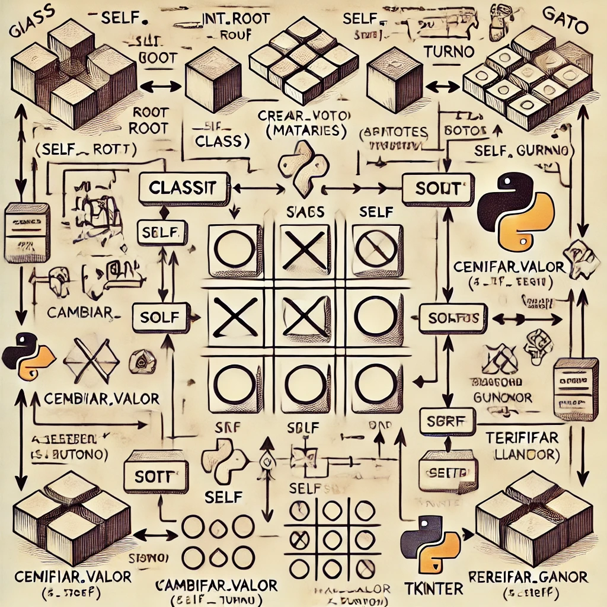

Integrantes del Equipo

Diego Lozano Camargo (230110530)

Bryan Fuentes Perez (230110581)
Prueba de ejecucion
Estructura
Implementación

Descripción General
Esta aplicación es un juego de "X" y "O" (también conocido como tres en raya) implementado en Python utilizando la biblioteca tkinter para la interfaz gráfica. Permite a dos jugadores alternar turnos, mostrando "X" o "O" en una matriz de 3x3. La aplicación también verifica quién gana o si el juego termina en empate.
Estructura del Código
Importaciones
import tkinter as tk
from tkinter import messageboxtkinter: Biblioteca estándar en Python para crear interfaces gráficas.messagebox: Módulo detkinterque permite mostrar cuadros de diálogo.
Clase MatrizApp
La clase principal que gestiona la lógica del juego y la interfaz gráfica.
Método _init_
def _init_(self, root):
self.root = root
self.root.title("Matriz 3x3")
self.matriz = [[None for _ in range(3)] for _ in range(3)]
self.turno = "X"
self.crear_botones()- Parámetros:
root: Ventana principal de la aplicación.
- Variables:
self.matriz: Lista de listas que almacena los botones de la matriz.self.turno: Variable que indica el turno actual ("X" o "O").
- Funcionalidad: Inicializa la matriz y llama a
crear_botonespara generar los botones.
Método crear_botones
def crear_botones(self):
for i in range(3):
for j in range(3):
boton = tk.Button(self.root, text='', width=5, height=2,
command=lambda i=i, j=j: self.cambiar_valor(i, j))
boton.grid(row=i, column=j)
self.matriz[i][j] = botonCrea 9 botones en una disposición de 3x3. Cada botón está vinculado a la función cambiar_valor, que se llama al hacer clic en el botón.
Método cambiar_valor
def cambiar_valor(self, i, j):
if self.matriz[i][j]['text'] == '':
self.matriz[i][j]['text'] = self.turno
if self.verificar_ganador():
messagebox.showinfo("¡Ganaste!", f"El jugador {self.turno} ha ganado!")
self.resetear()
elif self.tablero_lleno():
messagebox.showinfo("Empate", "El juego ha terminado en empate.")
self.resetear()
else:
self.turno = 'O' if self.turno == 'X' else 'X'- Funcionalidad:
- Cambia el texto del botón presionado a "X" o "O".
- Verifica si hay un ganador o si el tablero está lleno.
- Muestra un mensaje correspondiente y reinicia el juego si hay un ganador o un empate.
Método verificar_ganador
def verificar_ganador(self):
combinaciones = [
[(0, 0), (0, 1), (0, 2)], # Fila 1
[(1, 0), (1, 1), (1, 2)], # Fila 2
[(2, 0), (2, 1), (2, 2)], # Fila 3
[(0, 0), (1, 0), (2, 0)], # Columna 1
[(0, 1), (1, 1), (2, 1)], # Columna 2
[(0, 2), (1, 2), (2, 2)], # Columna 3
[(0, 0), (1, 1), (2, 2)], # Diagonal
[(0, 2), (1, 1), (2, 0)] # Diagonal inversa
]
for combinacion in combinaciones:
if self.matriz[combinacion[0][0]][combinacion[0][1]]['text'] == self.turno and \
self.matriz[combinacion[1][0]][combinacion[1][1]]['text'] == self.turno and \
self.matriz[combinacion[2][0]][combinacion[2][1]]['text'] == self.turno:
return True
return FalseFuncionalidad: Comprueba todas las combinaciones posibles de victoria (filas, columnas y diagonales). Retorno: Devuelve True si el jugador actual ha ganado, de lo contrario, devuelve False.
Método tablero_lleno
def tablero_lleno(self):
for fila in self.matriz:
for boton in fila:
if boton['text'] == '':
return False
return TrueFuncionalidad: Verifica si todos los botones de la matriz están llenos. Retorno: Devuelve True si el tablero está lleno, de lo contrario, devuelve False.
Método resetear
def resetear(self):
for fila in self.matriz:
for boton in fila:
boton['text'] = ''
self.turno = "X"Funcionalidad: Reinicia la matriz a su estado inicial (vacío) y restablece el turno a "X".
Ejecutar la Aplicación
root = tk.Tk()
app = MatrizApp(root)
root.mainloop()Descripción:
- Se crea la ventana principal de la aplicación.
- Se inicia el bucle principal que mantiene la aplicación en funcionamiento y espera interacciones del usuario.